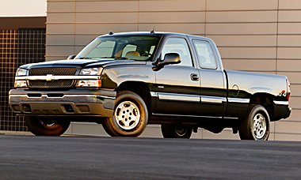

Chevrolet Silverado : Chevrolet's Hybrid Pick-up
The Silverado is considered a "mild" hybrid by industry standards. GM, the world's largest automaker, has said its advanced hybrids -- those that can achieve a fuel-economy improvement of up to 35 percent -- are not scheduled to reach showrooms until 2007.
The truck features a V-8 engine and four-speed automatic transmission coupled with hybrid technology that delivers 10 percent to 12 percent better fuel economy than GM's conventional half-ton pickups.
The Silverado's hybrid system utilizes a compact induction electric motor, or starter-generator, that is squeezed between the engine and transmission, replacing the conventional alternator and starter motor. The motor provides near instant starting power and the ability to generate up to 14,000 watts of continuous electric power.
The MSRP for the 2-wheel drive will be approximately $32,000, with the four-wheel drive coming in closer to $36,000.